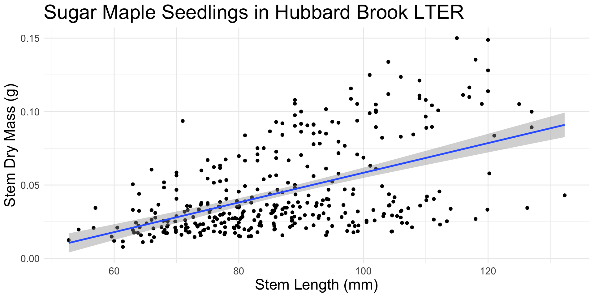
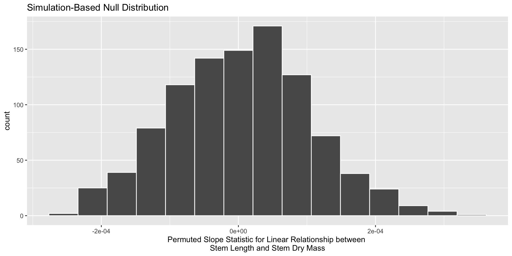
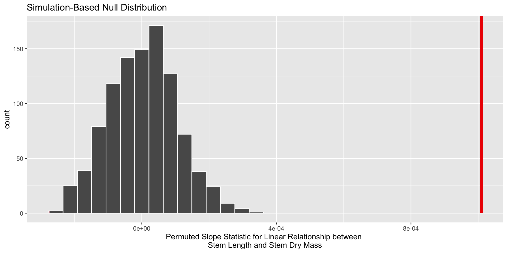

🧑🏽🔬 P-values & Hypothesis Tests
Weeks 8, 9, & 10
Week 8
- Learn about hypothesis testing for slope
- Critique use of p-values for statistical arguments
Week 9
- Learn about one-way ANOVA
- Get started on first portion of Final Project
Week 10
- Learn about two-way ANOVA
- Finish Final Project
you…
- understand the importance of sampling variability
- know about using confidence intervals to estimate a range of plausible values for the population parameter
- want to know how p-values fit in
What if I want to know if the population parameter differs from a specific value?
. . .
Hypothesis test!
Goal:
Assess how different what we saw in our data is from what could have happened if the null hypothesis was true
Permutation Distribution
. . .
Uses the original sample to generate new samples that might have occurred if the null hypothesis was true.
. . .
We can use the statistics from these samples to approximate the true sampling distribution under the null!
What could have happened if the null was true?
. . .
Like before, we are interested in knowing how a statistic varies from sample to sample.
. . .
Again, knowing a statistic’s behavior helps us make better / more informed decisions!
. . .
This helps us know what statistics are more or less likely to occur if the null hypothesis is true.
p-values
. . .
Quantify how “surprising” what we saw in our data is, if the null hypothesis was true
Permutation Resamples
. . .
From your original sample, separate the \(x\) values from the \(y\) values.
. . .
Create new ordered pairs by randomly pairing \(x\) values with \(y\) values (permuting the labels).
. . .
This is your permuted resample!
Permuted Statistics
Repeat this process many, many times.
. . .
Calculate a numerical summary (e.g., mean, median) for each permuted resample.
. . .
These are your permuted statistics!
Permutation Distribution
. . .
definition: a distribution of the permuted statistics from every permuted resample
. . .
Displays the variability in the statistic that could have happened with repeated sampling, if the null hypothesis was true.
. . .
Approximates the true sampling distribution under the null!
How do I get my p-value?
. . .
We compare the observed statistic with the statistics produced assuming the null hypothesis was true.
. . .
A p-value summarizes the probability of obtaining a sample statistic as or more extreme than what we observed, if the null hypothesis was true.
Your turn!
What is one similarity and one difference between
a permutation distribution
a bootstrap distribution
Exploring the hbr_maples dataset!

stem_length: a number denoting the height of the seedling in millimeters
stem_dry_mass: a number denoting the dry mass of the stem in grams
. . .
What condition do we need to be worried about?
Modeling the relationship between stem length and stem dry mass
length_mass_lm <- lm(stem_dry_mass ~ stem_length, data = hbr_maples)
get_regression_table(length_mass_lm)| term | estimate | std_error | statistic | p_value | lower_ci | upper_ci |
|---|---|---|---|---|---|---|
| intercept | -0.043 | 0.008 | -5.470 | 0 | -0.058 | -0.027 |
| stem_length | 0.001 | 0.000 | 11.425 | 0 | 0.001 | 0.001 |
How do I know what is likely to happen if the null is true?
. . .
Permuting!
Generating a permuted resample
. . .
Step 1: specify() your response and explanatory variables
. . .
Step 2: hypothesize() what would happen under the null
. . .
Step 3: generate() permuted resamples
. . .
Step 4: calculate() the statistic of interest
Declare your variables!
hbr_maples %>%
specify(response = stem_dry_mass,
explanatory = stem_length)State your hypothesis!
hbr_maples %>%
specify(response = stem_dry_mass,
explanatory = stem_length) %>%
hypothesize(null = "independence")"independence" – the assumed relationship between the explanatory and response variables under the null hypothesis
. . .
Independence of variables
Note! This is different from assuming your observations are independent!
Generate your resamples!
hbr_maples %>%
specify(response = stem_dry_mass,
explanatory = stem_length) %>%
hypothesize(null = "independence") %>%
generate(reps = 1000, type = "permute"). . .
reps – the number of resamples you want to generate
"permute" – the method that should be used to generate the new samples
infer will let you know if you missed something!
hbr_maples %>%
specify(response = stem_dry_mass,
explanatory = stem_length) %>%
generate(reps = 1000, type = "permute")Error: Permuting should be done only when doing independence hypothesis test. See `hypothesize()`.
In addition: Warning message:
You have given `type = "permute"`, but `type` is expected to be `"bootstrap"`.
This workflow is untested and the results may not mean what you think they mean. Calculate your statistics!
hbr_maples %>%
specify(response = stem_dry_mass,
explanatory = stem_length) %>%
hypothesize(null = "independence") %>%
generate(reps = 1000, type = "permute") %>%
calculate(stat = "slope") Your turn!
Why is the
hypothesize()function used to make a null distribution but not for a bootstrap distribution?What does the
null = "independence"input inhypothesize()mean? What is it assuming about the variables declared in thespecify()step?
The final product
visualise(null_dist) +
labs(x = "Permuted Slope Statistic for Linear Relationship between \nStem Length and Stem Dry Mass")
Is our observed statistic unlikely under the null?
. . .
Step 1: Calculate observed statistic
Step 2: Find observed statistic on permutation distribution
Finding the observed statistic
obs_slope <- hbr_maples %>%
specify(response = stem_dry_mass,
explanatory = stem_length) %>%
calculate(stat = "slope") visualise(null_dist) +
shade_p_value(obs_stat = obs_slope, direction = "two-sided") +
labs(x = "Permuted Slope Statistic for Linear Relationship between \nStem Length and Stem Dry Mass")
. . .
Is our observed statistic unlikely to have happened if the null hypothesis was true?
The p-value is…
get_p_value(null_dist,
obs_stat = obs_slope,
direction = "two-sided") Warning: Please be cautious in reporting a p-value of 0. This result is an
approximation based on the number of `reps` chosen in the `generate()` step.
See `?get_p_value()` for more information.# A tibble: 1 × 1
p_value
<dbl>
1 0. . .
Why did we get a warning?
How do we interpret a p-value?
. . .
Need:
- probability of what we saw in the data
- assuming the null hypothesis is true
. . .
“The probability of observing a slope statistic (for the relationship between stem length and stem dry mass) as or more extreme than what was observed is less than 1 in 1000, if there was no relationship between a sugar maple’s stem length and stem dry mass.
Classic interpretation mistakes
“The probability that the null hypothesis is true is about 0%.”
“The probability that the data were produced by random chance alone is about 0%.”
Exit ticket
Suppose we had obtained a p-value of 0.6 for the relationship between stem length and stem dry mass.
How would you interpret this value?